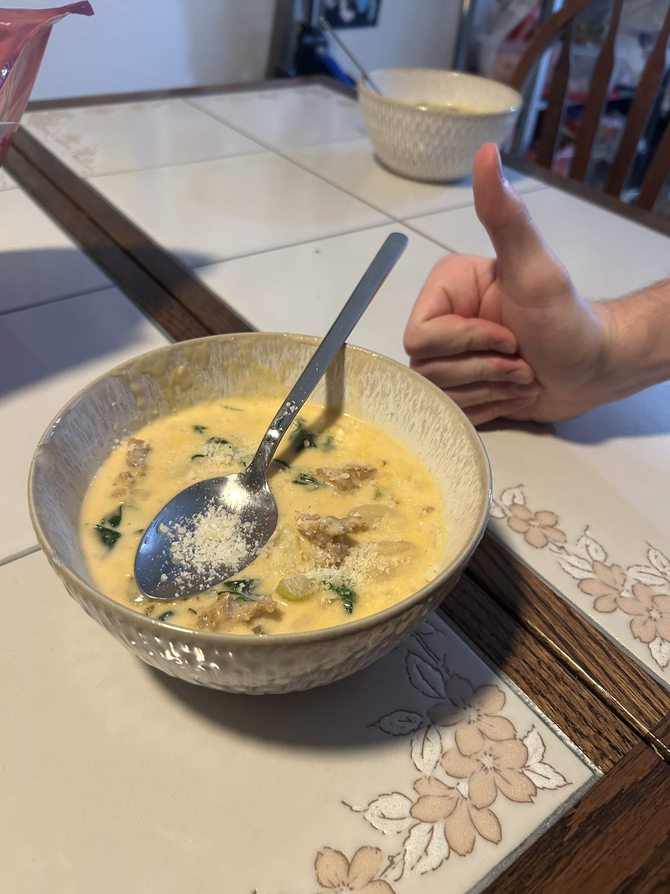

creamy sausage and gnocchi soup

an incredibly creamy and rich sausage + gnocchi soup that I stole off a youtube short. mostly carried by the fact that it's a ton of heavy cream.
did i mention that it tastes like cream? and italian. cream and italian. not italian cream, that's a different thing.
ingredience
- 1 lb italian sausage
- 1 onion, diced
- 4-6 cloves of garlic, minced
- 1 tablespoon double concentrated tomato paste (tube stuff)
- 3 cups chicken broth
- 16 oz dry gnocchi pasta
- 2 cups heavy cream
- a hefty handful of parmesan cheese
- 2 cups spinach
seasonings:
you're going to have to use your best judgement / measure from your heart
- salt
- pepper
- pick your favorite miscellaneous herbaceous seasonings: italian seasoning, oregano, basil, rosemary, thyme, parsley, or whatever.
- garlic powder
- onion powder if you want to
- crushed red peppers
steps
- brown italian sausage at bottom of a large stockpot over medium heat.
- add oil if needed to keep pan greased. add onion and garlic and cook for a minute or so until translucent
- add in seasonings, and also tomato paste. (be a little reserved about salt, since we're adding more salty ingredients later.)
- add chicken broth. bring to a boil
- once soup is boiling, add gnocchi. cook for 2-3 minutes, or until gnocchi is soft
- turn heat to low and add 2 cups of heavy cream
- stir in however much parmesan cheese you feel like adding
- let simmer for 10 minutes over low heat, stirring to make sure cream doesn't scorch. cream should thicken slightly (or maybe i'm making that up)
- add spinach and cook until wilted
- serve and enjoy!
back to home